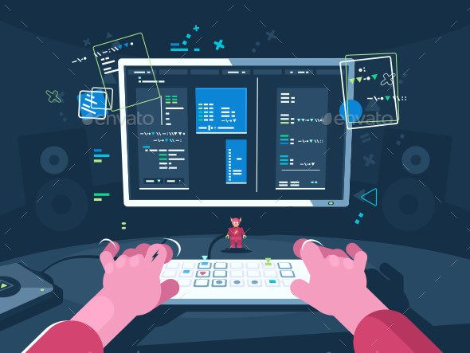

Haloo!
Selamat datang di Website saya
Saya adalah seorang yang sedang belajar tentang dunia coding dan pengembangan web. Meskipun saya masih pemula dalam hal ini, saya merasa sangat antusias dan bersemangat untuk terus belajar dan berkembang.
Sejak saya pertama kali menyentuh dunia coding, saya merasa tertarik dengan kemampuan untuk menciptakan sesuatu dari nol dan mengubahnya menjadi kenyataan di dunia digital. Awalnya, saya memulai perjalanan ini dengan belajar dasar-dasar HTML dan CSS.

Saat ini, saya sudah berhasil membuat beberapa halaman web sederhana menggunakan HTML dan CSS. Meskipun belum sampai pada tahap penggunaan JavaScript, saya bangga dengan setiap langkah kecil yang saya capai. Saya percaya bahwa fondasi yang kuat dalam HTML dan CSS akan menjadi dasar yang baik untuk memahami konsep-konsep yang lebih kompleks di masa depan.
Website yang saya buat mungkin masih jauh dari sempurna, namun setiap kesalahan dan tantangan yang saya hadapi menjadi pembelajaran berharga bagi saya. Saya selalu mencari peluang untuk meningkatkan keterampilan saya, baik melalui belajar secara mandiri maupun dengan berkolaborasi dengan komunitas yang lebih luas.
Di samping coding, saya juga memiliki minat dalam desain grafis dan user experience (UX) design. Saya percaya bahwa kombinasi antara keterampilan teknis dalam coding dan pemahaman yang baik tentang desain akan memungkinkan saya untuk menciptakan pengalaman pengguna yang lebih baik di web.
Melalui perjalanan saya sebagai seorang pemula dalam coding, saya ingin terus mengembangkan diri dan menjadi seorang pengembang web yang handal dan kreatif. Saya yakin bahwa dengan ketekunan, kerja keras, dan semangat belajar yang tinggi, saya dapat mencapai tujuan tersebut.